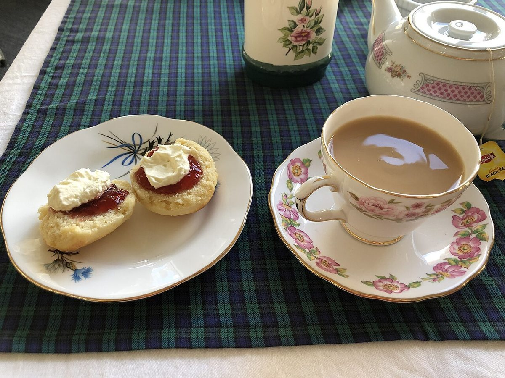
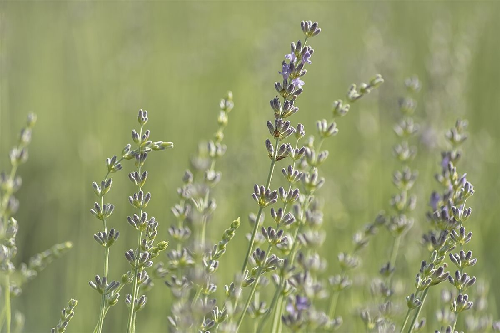
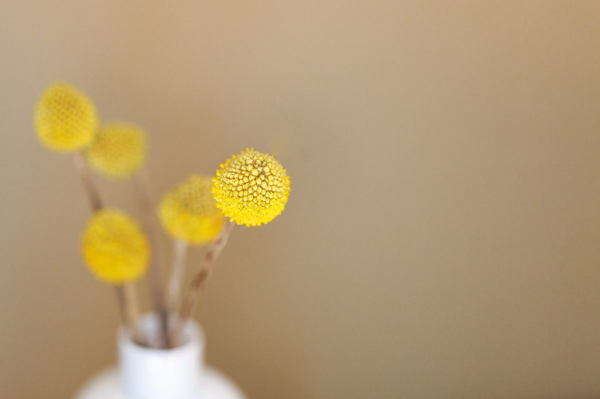

ベーカリー(スコーン) / 高知県高岡郡津野町
Jacksonスコーンズ
高知県高岡郡津野町にある、スコーンのお店「Jacksonスコーンズ」のご案内ページです。営業時間やメニューなど、詳しいことは準備中。まずはInstagramをのぞいてみてください。

制作側の連想
「スコーン」から、紫と黄の丘を思い浮かべて
このページの配色と構成は、制作側の連想で決めたものです。お店の理念・由来とは無関係です。「スコーン」という言葉から、制作側は英国の丘に咲く紫の花と黄色い花の取り合わせを連想しました。そこで、紫(ヒース色)を地に、黄色(ハリエニシダ色)を差し色にして、ページ全体を二色で組んでいます。写真もその連想で選んだ、国外・撮影地不明のフリー素材です。
ふたいろ(イメージ)
紫の側と、黄の側。
写真は津野町やお店のものではありません。色のイメージで選んだフリー素材です。
紫撮影地不明のイメージ 撮影地不明のイメージ

黄
国外のイメージ(イギリス) 撮影地不明のイメージ

ご案内
お店のこと(確認できたものだけ)
| 所在地 | 〒785-0219 高知県高岡郡津野町赤木559-1 |
|---|---|
| 電話 | なし |
| 営業時間 | 準備中 |
| 定休日 | 準備中 |
| ご予約 | 準備中 |
| 駐車場 | 準備中 |
| SNS | Instagram @jacksonscones |